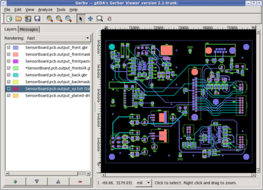

gerbv - A Free/Open Source Gerber Viewer
Overview
- Gerbv is a viewer for Gerber RS-274X files, Excellon drill files, and CSV pick-and-place files.
- Gerbv is a native Linux application, and it runs on many common unix
platforms.
- Gerbv is
free/
open-source software.
- You may download the source code
from
this
page.
- The core functionality of gerbv is located in a separate library (libgerbv), allowing developers to include Gerber parsing/editing/exporting/rendering into other programs. Documentation for libgerbv is here.
- Gerbv is one of the utilities
affiliated with the gEDA project,
an umbrella organization dedicated to producing free software tools for
electronic design.
- The latest official gerbv release is version 2.1.0, released on 8.24.2008.

About Gerber files
Gerber files
are typically output by a
PCB CAD tool
(such as the gEDA Project's
PCB),
and are sent to a PCB manufacturer who uses the files
for manufacturing
Printed Circuit Boards (PCBs).
There are two standards defining
Gerber files: An old one called
RS-274D, and a newer one called RS-274X. Gerber files generated in
the old format (RS-274D) lack aperture information, which must be
supplied separately. The new standard (RS-274X) embeds aperture
information into the file. The RS-274X standard is described in
this document.
Note: Gerbv displays RS-274X files! Gerbv will not display RS-274D files!
When you create Gerber files using
your PCB tool make sure you export RS-274X files if you want to view
the files with gerbv.
In the Gerber format, the different layers of a PCB (e.g. top silk,
top metal, interior layers, etc.) are held in separate files. Information about the
PCB's stackup (i.e. layer order, thickness, etc) is not captured by Gerber files;
it is up to the user to supply this information to gerbv, and to his PCB
manufacturer.
Gerbv's featureset
In summary, gerbv supports the following features:
- Gerbv runs on Linux and other unicies (Linux native).
- An experimental Windows version is available for beta-testing.
- Gerbv displays RS-274X files. (It does not display RS-274D files)
- Gerbv handles aperture macros with up to 10 levels of recursion.
- Gerbv supports complex layer operations (e.g. knockout).
- Gerbv can display many different drill file formats. In particular, Excellon drill
files are supported. Other drill files with similar syntax will also display.
- Gerbv displays well-formed pick-and-place files. Pick-place files
should contain XYRS (X, Y, Rotation, placement Side) information, and
be held in a comma-separated ASCII (.csv) format.
- Gerbv will autodetect Gerber, drill, or pick-place file type upon
readin.
- When built using the Cairo
rendering engine, gerbv can display Gerber layers in
"semi-transparent" mode, making it easy to visualize your board's
stack up.
- Gerbv provides facilities for analyzing and validating your Gerber
file's syntax, code count, aperture usage, etc.
This can be useful in situations in which you are
having problems in the CAM stage of manufacturing your PC Board (i.e.
when your manufacturer is having problems with your files).
- When built using Cairo,
gerbv allows for limited Gerber editing. (Currently limited to
object deletion.)
- Panning and zooming (both stepwise and outline) of the image is supported.
- Gerbv supports image autoscale -- i.e. zoom and pan the image to fit the
viewing window.
- Multiple files can be loaded simultaneously and be shown "on top of each
other".
- The number of layers you may load simultaneously is unlimited by gerbv.
- The layer order (stackup) may be changed using an intuitive "drag and drop" menu.
- You may turn display of individual layers on and off independently using a checkbox.
- You may set layer colors independently using a pop up color choice window.
- You may change the layer polarity (negative/positive display).
- Gerbv incorporates a measurement tool so you can make measurements on the image.
- Three different measurement units supported: inch, mm, mil (1/1000 inch). Measurement
units are user-selectable
- Gerbv can export a layer image to PNG, .ps, .pdf, and .svg, both
from within the GUI as well as via a command line switch (cairo version only).
- Gerbv performs negative/scratch draws.
- Gerbv includes a reload operation, which re-reads all loaded files off
disk. This feature is useful when you are manually hacking Gerber files.
- Gerbv allows you to save a session into a project file. The project file
stores the names of all loaded files, their stackup, color, etc. so
so you can easily reload all Gerber files in a project at a later date
(e.g. after re-editing then using a PCB layout tool.
Obtaining and installing gerbv
Gerbv is targeted to run on Linux and other unix variants.
Gerbv is now carried in most of the major Linux distribution's software repositories.
Therefore, most people will want to
install gerbv using their favorite package tool (such as yum, apt-get,
etc.) You can get installation files from the following places:
- Debian package
- Ubuntu package
- Fedora/RedHat RPMs are available from the common Fedora mirrors. Gerbv is also included in the
Fedora Electronics Lab. live CD. More information about installing on Fedora is
available on the
gEDA Wiki.
-
SuSE RPMs. More information about installing on SuSE is available
on the gEDA Wiki.
- NetBSD. It is available from the NetBSD ports tree (thanks Dan McMahill).
- FreeBSD, in their cad ports tree.
- Charles Lepple has built gerbv on the Mac OSX using
fink.
His fink packages and other installation information
are available here.
You can also get his fink packages
here
Build and install instructions
Prerequisites
If you wish to build gerbv from source, your system should have the
following libraries:
- GTK+, the graphical toolkit (required).
- Optional, but recommended: Cairo, a graphics library. This
provides advanced graphics rendering capability, as well as Gerber editing.
- Optional (only needed for non-Cairo builds): GDK-Pixbuf,
for PNG export.
- Optional (only needed for non-Cairo builds): libpng, needed to generate PNGs.
Building gerbv by downloading a release
- Download source tarballs from here.
- Expand source by running
gzip -dc <filename> | tar xf -
- Change to newly expanded directory
- Type
./configure <switches>.
The following (gerbv) switches are available to configure:
--help: Lists all configure options.--enable-debug: Program will output lots of debug spew while running.
(default = no -> no debug output by default.)--disable-exportpng: Disable compilation of export of PNGs.
(default = no -> exportpng on by default.)--enable-unit-mm: Set default unit for coordinates in status bar to mm
(default = no -> units = inches by default.)--disable-cairo: Use GDK only for graphics rendering.
(default = no -> both GDK and cairo used by default.)--enable-efence: Link with ElectricFence for malloc debugging
(default = no -> efence off by default.)--disable-update-desktop-database:
Update desktop icon database after installation
(default = no -> desktop icon installed by default.)
- Type
make
- Type
make install. Please note that if you want to
install it in a system directory you have to su first.
- Test by typing
gerbv
Building gerbv by downloading from anonymous CVS
- Login on anonymous CVS (only needed the first time):
cvs -d:pserver:anonymous@gerbv.cvs.sourceforge.net:/cvsroot/gerbv login .
Press Enter when CVS asks for a password.
- Check out the source tree:
cvs -z3 -d:pserver:anonymous@gerbv.cvs.sourceforge.net:/cvsroot/gerbv co gerbv
- Recreate all build system files:
sh autogen.sh
- Type
./configure <switches>.
The following (gerbv) switches are available to configure:
--help: Lists all configure options.--enable-debug: Program will output lots of debug spew while running.
(default = no -> no debug output by default.)--disable-exportpng: Disable compilation of export of PNGs.
(default = no -> exportpng on by default.)--enable-unit-mm: Set default unit for coordinates in status bar to mm
(default = no -> units = inches by default.)--disable-cairo: Use GDK only for graphics rendering.
(default = no -> both GDK and cairo used by default.)--enable-efence: Link with ElectricFence for malloc debugging
(default = no -> efence off by default.)--disable-update-desktop-database:
Update desktop icon database after installation
(default = no -> desktop icon installed by default.)
- Type
make
- Type
make install. Please note that if you want to
install it in a system directory you have to su first.
- Test by typing
gerbv
- Run
cvs update in the checked out gerbv directory to get the latest changes.
Supported platforms
Gerbv has been built and tested on
- Linux (2.2/2.4/2.6)
- NetBSD/i386 (1.4.1)
- NetBSD/Alpha (1.5.1)
- Solaris (5.7 and 5.8)
Information for developers
Gerbv is split into a core functional library and a GUI portion. Developers wishing to incorporate Gerber parsing/editing/exporting/rendering into other programs are welcome to use libgerbv. Complete API documentation for libgerbv is here, as well as many example programs using libgerbv.
Random resources and information
Gerbv resources
Other Gerber software
- Gerber2eps.
Generates Encapsulated PostScript from Gerber files.
- gerb2tif.
Generated TIFF from Gerber files. Also includes a win32 binary for the interested (new URL 20031231).
- Gerber RS-274D/X file viewer in Java.
Doesn't seem to work too well. Maybe a start if someone likes to hack Java.
- gerber2pdf.
A Python script that converts a gerber file 2 pdf. Seems quite advanced.
- GBTiler. Not actually a
viewer, but a panelizer as I understand it. Takes several gerber files
and puts them together next to each other. Written in Perl.
-
GerbMerge is also a panelizer, but written in Python.
- To convert an RS274D with an external aperture list to an RS274X Larry Doolittle
described
a short perl script in an email. Ormund Williams
tried to use it, but had to do some
slight modifications
to make it work for him.
Information about the Gerber file format
Submitting a patch or addition to gerbv
-
We are interested in all ideas and suggestions regarding gerbv. We also
reserve us the right to reject them though. Ideas implemented in source
code always has a greater chance to make it into the release in a near
future.
-
If you want to implement something for gerbv there is a certain "code
standard" we try to maintain. That is described in a text file in the
distribution HACKING. Please read it. And check that your code doesn't
stand out too much from the rest regarding naming of functions and
variables.
-
When submitting a patch, please use
diff -Naur <file.orig> <file> > <file.diff>
and send us the diff file.
-
Important! Please base your patch against the latest
version of the trunk held in CVS! Do not
base your patch against the released branch since the project maintainers
do not have lots of time to merge your patch into the trunk if it does not
apply cleanly to the trunk. If you have questions about submitting patches,
post them to the
geda-dev mailing list.
License
gerbv and all associated files are released under the
GNU Public License (GPL) version 2.0.
Programs and associated files are:
Copyright © 2001, 2002, 2003, 2004, 2005, 2006 by Stefan Petersen
and the respective original authors (which are listed in respective files).
Contact information
Archives
- 2008-08-24 : 2.1.0 general release available
here.
Announcement is readable here.
- 2008-02-09 : 2.0.1 general release available
here.
Announcement is readable here.
- 2008-01-13 : 2.0.0 general release available
here.
Announcement is readable here.
- 2008-01-9 : 2.0.0-beta release available
here.
Announcement is readable here.
- 2007-12-01 : 1.0.3 release available
here.
Announcement is readable here.
- 2006-07-28 : 1.0.2 release available
here.
Announcement is readable here.
- 2005-01-22 : 1.0.1 release available
here.
Announcement is readable here.
- 2004-12-28 : 1.0.0 release available
here.
Announcement is readable here.
- 2004-10-19 : Another beta of a windows version is released and available
here.
- 2004-10-07 : A beta of a windows version is available
here.
There is no particular announcement, but please read the release notes.
- 2004-05-27 : 0.16 release available
here.
Announcement is readable here.
- 2003-10-19 : 0.15 release available
here.
Announcement is readable here.
- 2003-09-16 : 0.14 release available
here.
Announcement is readable here.
- 2003-07-30 : Michael Ihde updated the ebuild script for Gentoo Linux.
- 2003-07-17 : Michael Ihde contributed an ebuild script for Gentoo Linux.
- 2003-03-19 : 0.13 release available
here.
Announcement is readable here.
- 2003-02-12 : The batch backend can't get compiled in release 0.12
(usually not compiled in by default). If you have an immediate need
for it to work, please contact me.
- 2003-02-10 : 0.12 release available
here.
Announcement is readable here.
- 2002-11-20 : 0.11 release available
here.
Announcement is readable here.
- 2002-10-19 : Release 0.0.10 didn't build proper on architecture other
than i386, as discovered by Debians autobuilder. If you get a load of
warnings saying "comparison is always false due to limited range of data
type" you should use
this patch.
Copy the file into gerbv-0.0.10 directory and run
gzip -dc gerbv-0.0.10_to_2.diff.gz | patch -p0 and recompile.
- 2002-10-13 : 0.0.10 release available
here.
Announcement is readable here.
- 2002-07-06 : 0.0.9 release available
here.
Announcement is readable here.
- 2002-05-06 : 0.0.8 release available
here.
Announcement is readable here.
- 2002-02-10 : 0.0.7 release available
here.
Announcement is readable here.
- 2001-12-15 : 0.0.6 release available
here.
Announcement is readable here.
- 2001-11-21 : 0.0.5 had some "fixes" which broke displaying some pads.
So if you miss a bunch of pads when displaying your Gerbers, try
this patch. Copy the file into
the src directory, run
patch < gerber.c.diff and rerun
make and make install.
- 2001-11-14 : Fifth relase (0.0.5) Available
here.
Announcement is readable here.
- 2001-10-27 : Fourth release (0.0.4). Available
here.
Announcement is readable here.
- 2001-09-17 : Hamish Moffatt has made 0.0.3 in Debian packages. See
here.
- 2001-09-09 : Third release (0.0.3). Available
here.
Announcement is readable here.
- 2001-09-02 : The 0.0.2 release missed some files. You can download them here:
- 2001-08-30 : Second release (0.0.2). Available
here.
Announcement is readable here.
- 2001-08-25 : First release (0.0.1) of source. Available
here.
Announcement is readable here.

$Id$